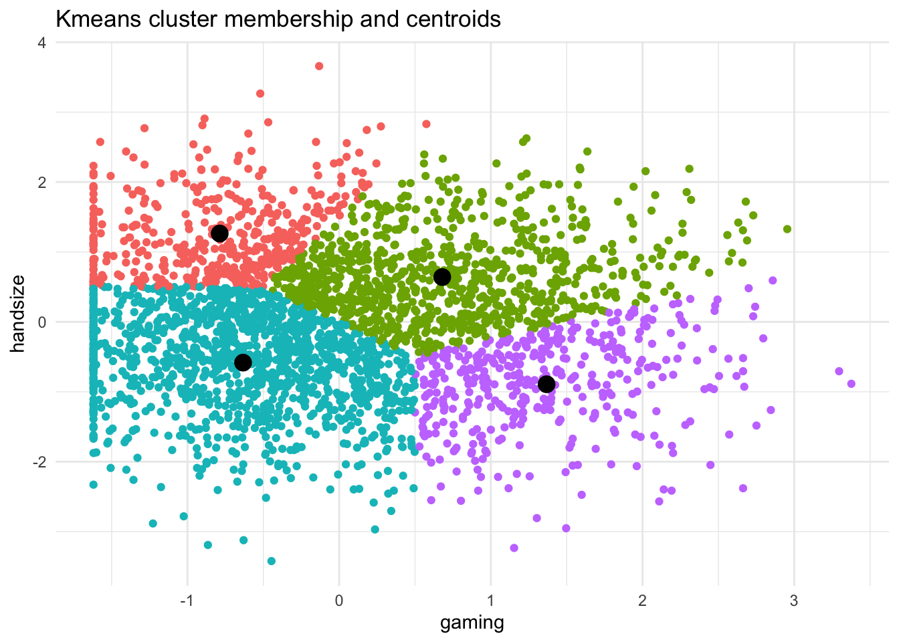

library(tidyverse)── Attaching core tidyverse packages ──────────────────────── tidyverse 2.0.0 ──
✔ dplyr 1.1.4 ✔ readr 2.1.5
✔ forcats 1.0.0 ✔ stringr 1.5.1
✔ ggplot2 3.4.4 ✔ tibble 3.2.1
✔ lubridate 1.9.3 ✔ tidyr 1.3.1
✔ purrr 1.0.2
── Conflicts ────────────────────────────────────────── tidyverse_conflicts() ──
✖ dplyr::filter() masks stats::filter()
✖ dplyr::lag() masks stats::lag()
ℹ Use the conflicted package (<http://conflicted.r-lib.org/>) to force all conflicts to become errorscust_dat <- read_csv("./smartphone_customer_data.csv")Rows: 3000 Columns: 19
── Column specification ────────────────────────────────────────────────────────
Delimiter: ","
chr (5): gender, discount, phone_id, brand, size_cat
dbl (14): height, handsize, age, gaming, chat, maps, video, social, reading,...
ℹ Use `spec()` to retrieve the full column specification for this data.
ℹ Specify the column types or set `show_col_types = FALSE` to quiet this message.sub <- cust_dat %>% select(gaming, handsize)
head(sub) # A tibble: 6 × 2
gaming handsize
<dbl> <dbl>
1 316. 7.88
2 442. 5.63
3 245. 7.5
4 386. 5.97
5 204. 6.71
6 499. 7.7 ggplot(sub) +
geom_point(aes(gaming, handsize)) +
theme_minimal()
scl <- sub %>% scale() %>% as_tibble()
scl# A tibble: 3,000 × 2
gaming handsize
<dbl> <dbl>
1 0.509 0.661
2 1.35 -1.26
3 0.0268 0.336
4 0.977 -0.971
5 -0.246 -0.339
6 1.74 0.507
7 -0.661 0.0371
8 -0.641 -2.13
9 1.72 -0.296
10 -0.784 -0.569
# ℹ 2,990 more rows # let's check that the scaling worked
scl %>% summarize_all(mean) %>% round(3) # check means# A tibble: 1 × 2
gaming handsize
<dbl> <dbl>
1 0 0 scl %>% summarize_all(sd) # check std devs# A tibble: 1 × 2
gaming handsize
<dbl> <dbl>
1 1 1 out <- kmeans(scl, centers=4, nstart=10)
K <- 4
D <- 10
set.seed(1234)
out <- kmeans(scl, centers=K, nstart=D)
str(out)List of 9
$ cluster : int [1:3000] 3 2 4 2 1 3 1 1 2 1 ...
$ centers : num [1:4, 1:2] -0.739 0.919 1.097 -0.603 -0.72 ...
..- attr(*, "dimnames")=List of 2
.. ..$ : chr [1:4] "1" "2" "3" "4"
.. ..$ : chr [1:2] "gaming" "handsize"
$ totss : num 5998
$ withinss : num [1:4] 524 439 463 594
$ tot.withinss: num 2019
$ betweenss : num 3979
$ size : int [1:4] 875 568 626 931
$ iter : int 4
$ ifault : int 0
- attr(*, "class")= chr "kmeans" # 3 ways to extract a list element -- returns the element
str(out$cluster) int [1:3000] 3 2 4 2 1 3 1 1 2 1 ... str(out[["cluster"]]) int [1:3000] 3 2 4 2 1 3 1 1 2 1 ... str(out[[1]]) int [1:3000] 3 2 4 2 1 3 1 1 2 1 ... # 2 related ways to subset a list into a one-element list (usually not what you want)
str(out["cluster"])List of 1
$ cluster: int [1:3000] 3 2 4 2 1 3 1 1 2 1 ... str(out[1])List of 1
$ cluster: int [1:3000] 3 2 4 2 1 3 1 1 2 1 ... # We can also see that out$centers is a k-by-J matrix with the coordinates of the
# clusters' centers
str(out$centers) num [1:4, 1:2] -0.739 0.919 1.097 -0.603 -0.72 ...
- attr(*, "dimnames")=List of 2
..$ : chr [1:4] "1" "2" "3" "4"
..$ : chr [1:2] "gaming" "handsize" out$centers gaming handsize
1 -0.7389810 -0.7204634
2 0.9189017 -0.9874657
3 1.0965455 0.6677762
4 -0.6033999 0.8305672#grab the cluster membership as a variable and add it to our
# dataset as a factor/categorical variable
sub <- sub %>% mutate(cluster = factor(out$cluster))
sub %>% count(cluster)# A tibble: 4 × 2
cluster n
<fct> <int>
1 1 875
2 2 568
3 3 626
4 4 931 out$size[1] 875 568 626 931 # Then, store the clusters' center locations in their own tibble/dataframe
centers <- as_tibble(out$centers)
centers# A tibble: 4 × 2
gaming handsize
<dbl> <dbl>
1 -0.739 -0.720
2 0.919 -0.987
3 1.10 0.668
4 -0.603 0.831 # calculate mean and sd
SD <- sub %>% select(gaming, handsize) %>% summarize_all(sd)
MEAN <- sub %>% select(gaming, handsize) %>% summarize_all(mean)
SD# A tibble: 1 × 2
gaming handsize
<dbl> <dbl>
1 149. 1.17 MEAN# A tibble: 1 × 2
gaming handsize
<dbl> <dbl>
1 241. 7.11 # repeat/format the values so we can do math with centers (this is needed for line 129 below)
SD <- SD %>% unlist() %>% rep(K) %>% matrix(nrow=K, ncol=2, byrow=T)
MEAN <- MEAN %>% unlist() %>% rep(K) %>% matrix(nrow=K, ncol=2, byrow=T)
SD [,1] [,2]
[1,] 148.6346 1.170988
[2,] 148.6346 1.170988
[3,] 148.6346 1.170988
[4,] 148.6346 1.170988 MEAN [,1] [,2]
[1,] 240.746 7.106557
[2,] 240.746 7.106557
[3,] 240.746 7.106557
[4,] 240.746 7.106557 # unscale the centers (convert back into original units)
centers <- centers*SD + MEAN
round(centers, 1) gaming handsize
1 130.9 6.3
2 377.3 6.0
3 403.7 7.9
4 151.1 8.1 #plot the points (colored by cluster membership) and the cluster centers
ggplot() +
geom_point(data=sub, aes(x=gaming, y=handsize, color=cluster)) +
geom_point(data=centers, aes(x=gaming, y=handsize), size=4) +
ggtitle("Kmeans cluster membership and centroids") +
theme_minimal() # Run this function to show initial cluster points, in scaled space
fun1 <- function() {
# specify a starting point for the cluster centroids
c1 <<- c(gaming=-1, handsize= 2)
c2 <<- c(gaming= 1, handsize= 1)
c3 <<- c(gaming=-1, handsize=-1)
c4 <<- c(gaming= 2, handsize=-1)
# convert to a data.frame
cent_dat <<- data.frame(rbind(c1, c2, c3, c4))
# pick colors
col4 <- c("magenta", "green", "cyan", "purple")
# plot
p <- ggplot() +
geom_point(data=scl, aes(gaming, handsize)) +
geom_point(data=cent_dat, aes(gaming, handsize),
shape=21, fill=col4, color="black", size=5) +
ggtitle("Kmeans centroids") +
theme_minimal()
print(p)
return(invisible())
}
fun1() # Run this function to show assignment of points
fun2 <- function() {
# get assignment criteria (euclidean distance to centroids)
c1ssq <- apply(scl, 1, function(x) sqrt(sum((x-c1)^2)))
c2ssq <- apply(scl, 1, function(x) sqrt(sum((x-c2)^2)))
c3ssq <- apply(scl, 1, function(x) sqrt(sum((x-c3)^2)))
c4ssq <- apply(scl, 1, function(x) sqrt(sum((x-c4)^2)))
# pick closest centroid as cluster to which each point is assigned
clust <<- factor(apply(cbind(c1ssq, c2ssq, c3ssq, c4ssq), 1, which.min))
# plot
p <- ggplot() +
geom_point(data=scl, aes(gaming, handsize, color=clust)) +
geom_point(data=cent_dat, aes(gaming, handsize), size=4) +
ggtitle("Kmeans cluster membership and centroids") +
theme_minimal() +
theme(legend.position = "none")
print(p)
return(invisible())
}
fun2() # run these functions a few times to show convergence
fun3 <- function() {
# Update cluster centers
c1 <<- apply(scl[clust==1, ], 2, mean)
c2 <<- apply(scl[clust==2, ], 2, mean)
c3 <<- apply(scl[clust==3, ], 2, mean)
c4 <<- apply(scl[clust==4, ], 2, mean)
cent_dat <<- data.frame(rbind(c1, c2, c3, c4))
# plot
p <- ggplot() +
geom_point(data=scl, aes(gaming, handsize, color=clust)) +
geom_point(data=cent_dat, aes(gaming, handsize), size=4) +
ggtitle("Kmeans cluster membership and centroids") +
theme_minimal() +
theme(legend.position = "none")
print(p)
return(invisible())
}
fun4 <- function() {
# get assignment criteria (euclidean distance to centroids)
c1ssq <- apply(scl, 1, function(x) sqrt(sum((x-c1)^2)))
c2ssq <- apply(scl, 1, function(x) sqrt(sum((x-c2)^2)))
c3ssq <- apply(scl, 1, function(x) sqrt(sum((x-c3)^2)))
c4ssq <- apply(scl, 1, function(x) sqrt(sum((x-c4)^2)))
clust <<- factor(apply(cbind(c1ssq, c2ssq, c3ssq, c4ssq), 1, which.min))
# plot
p <- ggplot() +
geom_point(data=scl, aes(gaming, handsize, color=clust)) +
geom_point(data=cent_dat, aes(gaming, handsize), size=4) +
ggtitle("Kmeans cluster membership and centroids") +
theme_minimal() +
theme(legend.position = "none")
print(p)
return(invisible())
}
fun3()
fun4() fun3()
fun4() fun3() fun4() fun3() fun4() fun3() fun4() fun3() fun4() fun3() fun4() fun3() fun4()# You can keep doing it and see the points moving
# clean up
rm(cent_dat, centers, c1, c2, c3, c4, clust)
# add labels back to data
cust_dat <- cust_dat %>% mutate(cluster = factor(out$cluster))
head(cust_dat)# A tibble: 6 × 20
gender height handsize age gaming chat maps video social reading
<chr> <dbl> <dbl> <dbl> <dbl> <dbl> <dbl> <dbl> <dbl> <dbl>
1 female 71 7.88 20 316. 282. 77.0 500. 176. 93.4
2 male 64.6 5.63 20 442. 163. 17.5 588. 104. 62.3
3 male 66.8 7.5 20 245. 362. 143. 357. 319. 82.7
4 male 67.3 5.97 19 386. 202. 82.7 538. 244. 117.
5 male 68.1 6.71 19 204. 408. 144. 242. 344. 67.5
6 male 67.9 7.7 20 499. 157. 56.6 374. 112. 48.6
# ℹ 10 more variables: total_minutes <dbl>, days_ago <dbl>, years_ago <dbl>,
# discount <chr>, phone_id <chr>, brand <chr>, size_cat <chr>, price <dbl>,
# screen_size <dbl>, cluster <fct># Also can do other market research
# Profile the segments by demographics. Specifically:
# summarize the segments by age, gender, height, and time spent chatting
# For numeric variables, we can simply take means.
# For categorical variables, we calculate a proportion by taking the mean over the number of
# times something is "true"
cdat <- cust_dat %>%
group_by(cluster) %>%
summarize(mean_age = mean(age),
prop_female = mean(gender=="female"),
mean_height = mean(height),
mean_chat = mean(chat))
# view results
cdat# A tibble: 4 × 5
cluster mean_age prop_female mean_height mean_chat
<fct> <dbl> <dbl> <dbl> <dbl>
1 1 20.0 0.625 63.7 324.
2 2 20.1 0.674 62.6 197.
3 3 20.1 0.428 69.2 197.
4 4 20.0 0.380 69.9 309. # We see that cluster two of the clusters chat substantially more than the other two clusters
# And we see that two of the clusters have a lower percentage of females than the other two clusters
# We can plot some of these relationships
ggplot(cdat) +
geom_col(aes(y=mean_chat, x=cluster, fill=cluster)) +
ggtitle("Time spent in chat apps by segment") +
theme_minimal()# Similar to privious project lets fiture out what is the best K number by using elbow plot.
# we might want more information on which to base our choice of k
# One thing we might do is try many different values of k, and evaluate
# the performance of the algorithm for each k. Here, our performance
# criteria will be the within-group sum of squares (WSS) from the model.
# As k increases, the WSS will decrease. The question is:
# how fast does it decrease?
# let's try k=1, k=2, ..., k=10
# we'll create a vector named 'res' to store our results
res <- vector(length=10)
# we loop over k=1 through k=10
for(i in 1:10) {
# run k means
out <- kmeans(scl, centers=i)
# grab the WSS value, store it in the i'th position of res
res[i] <- out$tot.withinss
}
# let's plot the WSS for each value of k
ggplot(data.frame(x=1:10, y=res), aes(x,y)) +
geom_line(color="grey") +
geom_point(size=3) +
xlab("Number of Clusters (K)") +
ylab("Within-Group Sum of Squares (WSS)") +
theme_minimal()